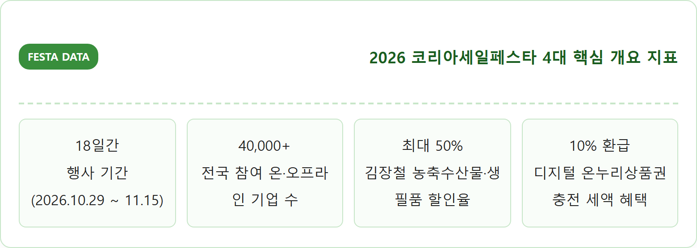
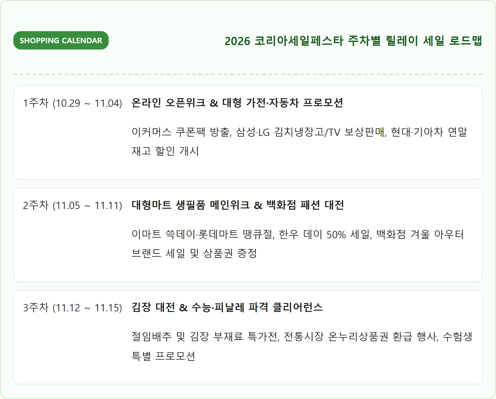
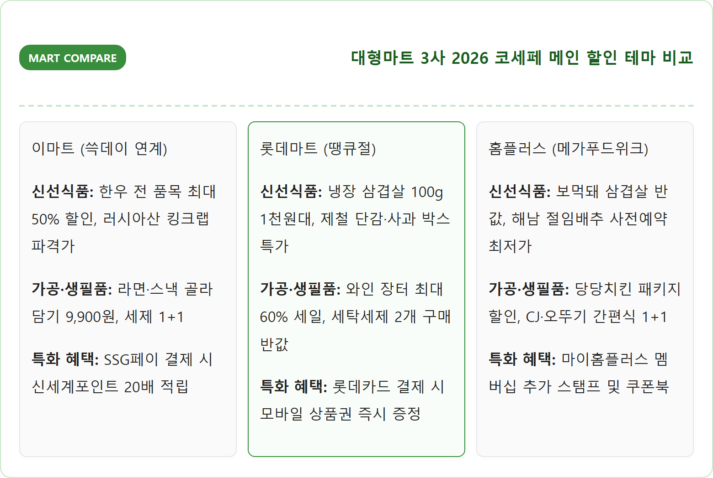
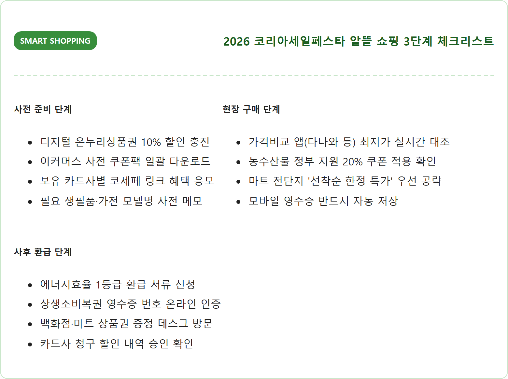
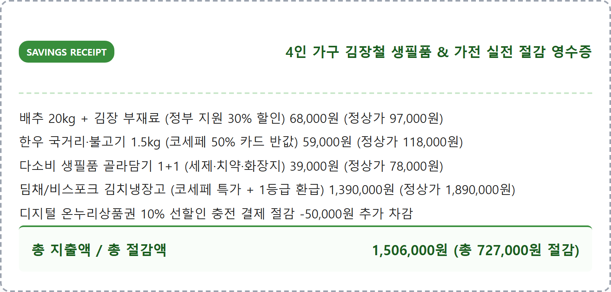
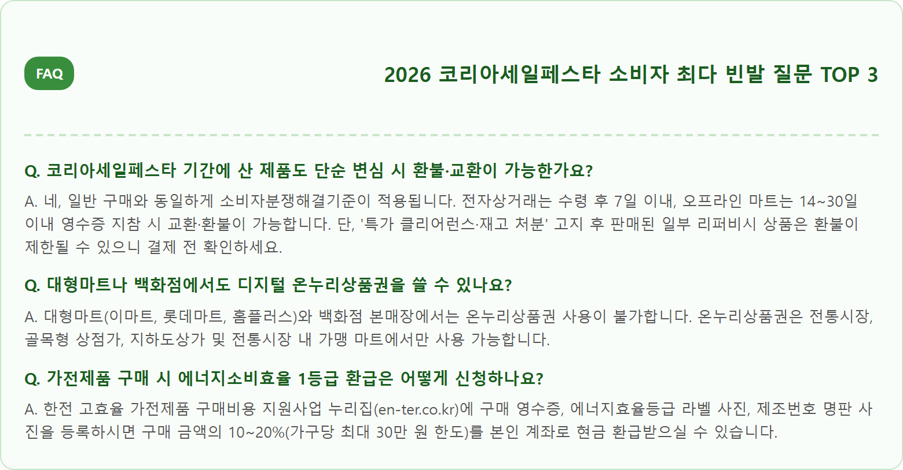

2026 코리아세일페스타 참여 업체와 할인 캘린더 — 백화점·대형마트 생필품 세일 기간 총정리
대한민국 최대 쇼핑 축제인 '2026 코리아세일페스타(K-세일페스타)'가 2026년 10월 29일(목)부터 11월 15일(일)까지 18일간 전국 온·오프라인 매장에서 역대 최대 규모로 개최됩니다.
산업통상자원부와 유통업계가 공동 주관하는 이번 행사에는 백화점, 대형마트, 이커머스, 편의점, 전통시장뿐만 아니라 삼성·LG 가전 제조사와 현대·기아 등 완성차 업계까지 약 4만여 개 기업이 총출동합니다. 고물가와 환율 부담 속에서 김장철 농축수산물 50% 파격 할인부터 대형 가전·자동차 연말 특별 세일, 10% 할인 충전되는 디지털 온누리상품권 상생소비복권 혜택까지 소비자가 반드시 챙겨야 할 알짜 쇼핑 캘린더와 실전 공략법을 완벽 정리해 드립니다.
📷 AI 대표 메인 썸네일 생성 영역images/261025/5_hot_korea_sale_festa_calendar_shopping_guide_1.png
A vibrant, high-detail, realistic photograph capturing a modern Korean retail shopping festival scene during the 2026 Korea Sale Festa. Inside a bright, expansive modern department store and shopping mall atrium, stylish banners and digital displays promote nationwide autumn mega discounts and special offers in clean Korean typography. Diverse shoppers walking through displays of fresh seasonal produce, premium home electronics, and trendy autumn fashion coats. Warm cinematic lighting, energetic commercial ambiance, crisp 8k resolution, authentic Korean urban retail setting, 1:1 aspect ratio.
2026 코리아세일페스타 전국 동시 할인 행사와 대형 유통 매장 쇼핑 풍경 / AI 제작 이미지
01 | 2026 코리아세일페스타 개요 — 10월 29일부터 11월 15일까지 열리는 대한민국 쇼핑 축제
매년 11월 미국의 블랙프라이데이와 중국의 광군제에 맞서 내수 소비 진작과 물가 안정을 위해 열리는 '코리아세일페스타(코세페)'가 2026년 더욱 막강해진 혜택으로 돌아왔습니다.
2026년 공식 행사 기간은 **10월 29일(목)부터 11월 15일(일)까지 총 18일간** 이어지며, 11월 1일(일)을 기점으로 전국의 모든 백화점과 대형마트가 메인 테마 할인 행사에 일제히 돌입합니다.
올해는 특히 범정부 통합 소비 진작 행사인 '코리아 그랜드 페스티벌'과 연계되어, 중소벤처기업부의 동행축제, 문화체육관광부의 관광·숙박 할인, 관세청의 듀티프리 페스타가 하나로 통합되어 진행됩니다.
소비자 입장에서는 단순한 유통 할인 쿠폰을 넘어 정부 지원 할인 쿠폰, 디지털 온누리상품권 페이백, 카드사 청구 할인까지 3중 중복 혜택을 누릴 수 있는 연중 유일한 골든위크입니다.

2026 코리아세일페스타 핵심 지표 / 인포그래픽 카드
02 | 부문별 참여 기업과 공식 캘린더 — 백화점, 대형마트, 가전, 자동차, 이커머스
코세페 기간에는 각 유통 채널마다 메인 할인 품목과 오픈 시점이 서로 다르므로, 주차별 할인 캘린더를 파악해 동선을 짜는 것이 알뜰 쇼핑의 핵심입니다.
2주차(11.05~11.11)는 대형마트 3사의 한우 반값 데이 및 생필품 1+1 행사, 백화점 가을·겨울 패션 정기 세일이 집중되는 '골든 쇼핑 위크'입니다.
3주차(11.12~11.15)는 김장철 필수 재료(배추, 무, 고춧가루, 젓갈) 집중 할인과 수능 수험생 특별 할인, 가전 재고 소진 피날레 세일이 전개됩니다.

2026 코세페 주차별 쇼핑 캘린더 / 인포그래픽 카드
03 | 대형마트 3사(이마트·롯데마트·홈플러스) 생필품 및 김장철 물가 파격 세일
서민 장바구니 물가와 가장 직결되는 대형마트 3사는 코세페 기간 자체 브랜드(PB) 상품과 신선식품을 중심으로 사활을 건 할인 경쟁을 펼칩니다.
**이마트**는 그룹사 통합 행사인 '쓱데이'와 연계하여 한우 전 품목 최대 50% 카드사 할인, 삼겹살·목심 파격 특가, 라면·치약·세제 등 다소비 생필품 '골라담기 1+1' 행사를 전격 단행합니다.
**롯데마트**는 창립 기념 '땡큐절'을 통해 킹크랩과 러시아산 활대게 반값 기획전, 캐나다산 냉장 삼겹살 파격가 행사, 샤인머스캣과 단감 등 제철 과일 1박스 패키지 할인전을 선보입니다.
**홈플러스**는 '메가푸드위크'를 앞세워 보리먹인 돼지 '보먹돼' 할인과 당당치킨 패키지, 델리 코너 인기 메뉴를 최대 40% 저렴한 가격에 공급합니다.
특히 11월 초순부터 시작되는 김장철을 겨냥해 괴산·해남 절임배추 사전 예약과 신안 천일염, 영양 고춧가루 등 김장 필수 재료를 농식품부 농축산물 할인지원 쿠폰(20~30%)과 연계해 파격가에 선보입니다.

대형마트 3사 대표 프로모션 비교표 / 인포그래픽 카드
04 | 주요 백화점 3사(롯데·신세계·현대) 가을 정기 세일 및 패션·아우터 할인 행사
겨울 패션 의류와 프리미엄 혼수 장만을 준비하는 소비자라면 백화점 3사의 겨울 아우터 페어와 상품권 페이백 행사를 주목해야 합니다.
롯데, 신세계, 현대백화점은 코세페 기간 영캐주얼부터 아웃도어, 프리미엄 여성복, 남성 정장에 이르는 전 브랜드가 참여하는 '윈터 메가 세일'을 진행합니다.
노스페이스, K2, 코오롱스포츠, 블랙야크 등 주요 아웃도어 브랜드의 프리미엄 다운 패딩 및 구스다운 롱코트를 최대 30~40% 할인된 가격에 선보이며, 이월 상품 특가전을 통해 최대 60%의 파격 할인을 제공합니다.
특히 단일 브랜드 30만/60만/100만 원 이상 구매 시 7~10%에 해당하는 백화점 모바일 상품권을 증정하는 사은행사가 주말마다 열리므로, 고가의 겨울 외투나 명품 잡화를 구매할 최적의 타이밍입니다.
05 | 대형 가전 및 자동차 특별 할인 — 삼성·LG 가전 및 완성차 업계 할인 혜택
가전제품과 신차 구매는 단가 자체가 크기 때문에 코리아세일페스타의 혜택 체감도가 가장 극대화되는 분야입니다.
**삼성전자**는 '삼성전자 코리아세일페스타'를 통해 김치플러스 김치냉장고, 네오 QLED TV, 비스포크 AI 세탁건조기 등 주력 가전 구매 시 최대 30~35% 상당의 혜택(포인트 페이백 및 캐시백)을 제공하며, 2개 이상 품목 다품목 구매 시 최대 500만 원 상당의 추가 패키지 할인을 지급합니다.
**LG전자** 역시 'LG 코세페 기획전'을 열고 디오스 오브제컬렉션 김치냉장고, 올레드 TV, 스타일러 등 인기 가전을 특가 판매하며, 한전 고효율 가전제품 구매비용 지원사업(1등급 가전 10~20% 환급)과 연계하여 실구매가를 대폭 낮췄습니다.
**완성차 업계**에서는 현대차(아반떼, 쏘나타, 그랜저, 팰리세이드 등)와 기아(K5, K8, 쏘렌토, 카니발 등)가 연말 재고 정리를 위해 최대 200만~300만 원의 현금 할인 또는 1.9~2.9%대 초저금리 할부 프로그램을 코세페 기간 한정으로 운영합니다.
06 | 디지털 온누리상품권 연계 할인과 상생소비복권 응모 방법 — 추가 환급 팁
전통시장과 골목상권에서 코세페를 이용하는 가장 스마트한 방법은 **'디지털 온누리상품권(카드형·모바일형)'**을 적극 활용하는 것입니다.
코세페 기간 중소벤처기업부는 온누리상품권 월 구매 한도를 기존 150만 원에서 최대 200만 원으로 대폭 상향하고, 충전 시 10% 선할인 혜택을 전 국민에게 제공합니다. (예: 100만 원 충전 시 실결제액 90만 원)
전통시장 내 수산물 코너나 청과물 상점에서 온누리상품권으로 결제하면 현장에서 즉시 10% 절감 효과를 보며, 해양수산부 수산물 온누리 환급 행사(당일 5만 원 이상 구매 시 2만 원 온누리상품권 페이백)와 중복 적용받을 수 있습니다.
또한 코세페 기간 전통시장과 소상공인 매장에서 누적 3만 원 이상 결제한 영수증을 공식 이벤트 누리집에 인증하면 최대 1,000만 원의 당첨금을 지급하는 **'상생소비복권'** 추첨에 자동 응모되어 추가적인 행운까지 노릴 수 있습니다.

코세페 알뜰 쇼핑 3단계 체크리스트 / 인포그래픽 카드
07 | 온라인 쇼핑몰 및 이커머스 쿠폰팩 공략법 — 타임딜과 카드사 즉시 할인
오프라인 매장 방문이 어려운 직장인이라면 쿠팡, 11번가(그랜드 십일절), G마켓·옥션(빅스마일데이), 네이버쇼핑 등 주요 이커머스의 11월 메가 프로모션을 집중 공략해야 합니다.
이커머스 플랫폼들은 매일 자정(00시)과 오전 9시에 한정 수량 쿠폰팩(최대 20~25% 중복 할인 쿠폰)을 발급하므로, 알람을 맞추고 사전에 장바구니에 담아둔 상품에 쿠폰을 적용해 결제하는 스피드가 요구됩니다.
특히 신한, 삼성, KB국민, 롯데, 현대 등 주요 카드사와 제휴한 '결제 시 7~10% 즉시 할인' 혜택은 일일 예산이 조기 소진되는 경우가 많으므로, 행사 첫날 자정 직후에 결제하는 것이 성공 확률을 가장 높이는 방법입니다.

코세페 4인 가구 실전 절감 영수증 / 인포그래픽 카드
08 | 소비자가 꼭 알아야 할 '미끼 상품' 구별법과 합리적 쇼핑 요령
대규모 할인 축제라는 분위기에 휩쓸려 불필요한 과소비를 하거나 '가짜 할인'에 속지 않으려면 현명한 소비자 안목이 필수적입니다.
일부 판매처에서는 행사 직전 원래 가격을 슬그머니 올려놓고 50%를 할인해 주는 척하는 '눈속임 가격 책정'을 하기도 합니다. 따라서 제품을 구매하기 전 반드시 **네이버 쇼핑이나 에누리, 다나와의 최근 3개월 가격 변동 그래프**를 조회해 실제 최저가 수준인지 확인해야 합니다.
또한 마트 전단지에 '한정 수량 100개 70% 세일'로 적힌 초특가 미끼 상품은 개점 10분 만에 품절되는 경우가 많으므로, 오픈런을 하지 못할 상황이라면 미끼 상품에 연연하지 말고 1+1 기획 생필품이나 실질적인 정부 지원 할인 품목 위주로 장바구니를 채우는 것이 현명합니다.
09 | 코리아세일페스타 구매 영수증 환급 행사 및 이벤트 참여 절차
행사 기간 중 물품을 구매했다면 결제 영수증을 절대 버리지 말고 지자체 및 정부 환급 이벤트에 즉시 활용해야 합니다.
온·오프라인 매장에서 발급받은 종이 영수증이나 전자영수증을 스마트폰으로 촬영하여 **코리아세일페스타 공식 웹사이트(koreasalefesta.kr)** 또는 상생소비복권 응모 페이지에 업로드하면 참여가 완료됩니다.
또한 전통시장 내 수산물 온누리상품권 환급 부스는 주말 오후 늦게 가면 당일 준비된 상품권 예산이 조기 마감되므로, 전통시장에서 장을 보셨다면 물품 구매 직후 영수증을 챙겨 곧바로 시장 상인회 환급 부스로 이동해 온누리상품권을 수령하세요.
10 | 2026 코리아세일페스타 알짜 혜택 총정리 체크리스트와 FAQ
코세페 쇼핑을 앞둔 소비자들이 가장 헷갈려하는 핵심 의문점들을 Q&A로 명쾌하게 정리했습니다.

코세페 자주 묻는 질문 FAQ / 인포그래픽 카드
⚠️ 안전한 쇼핑을 위한 스미싱 주의보
'코리아세일페스타 무료 쿠폰 지급', '당첨금 지급' 문구와 함께 출처가 불분명한 인터넷 주소(URL) 링크가 포함된 문자메시지는 스미싱 사기이므로 절대 클릭하지 마세요.
공식 이벤트는 반드시 산업통상자원부 및 공식 누리집(koreasalefesta.kr)을 통해서만 진행됩니다.